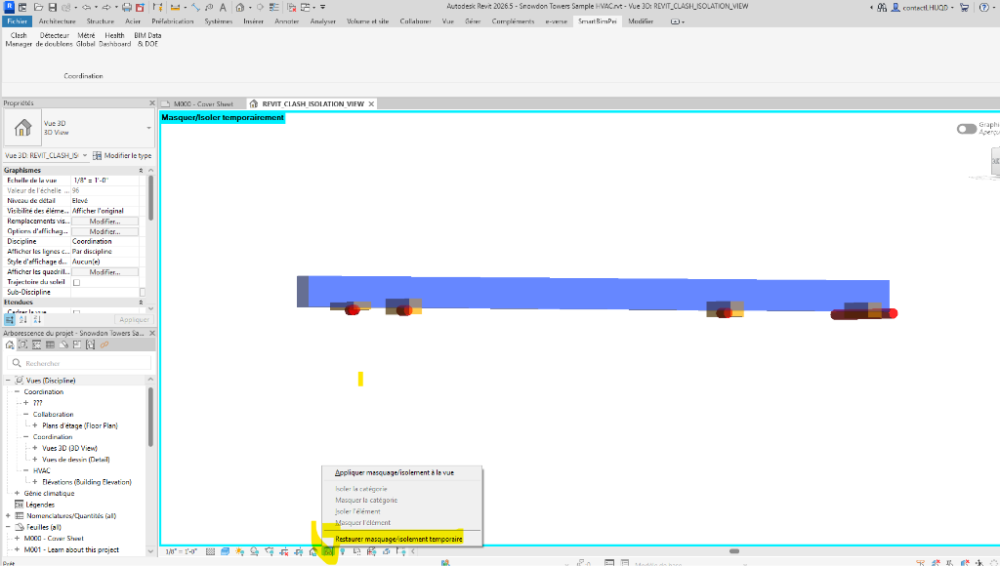
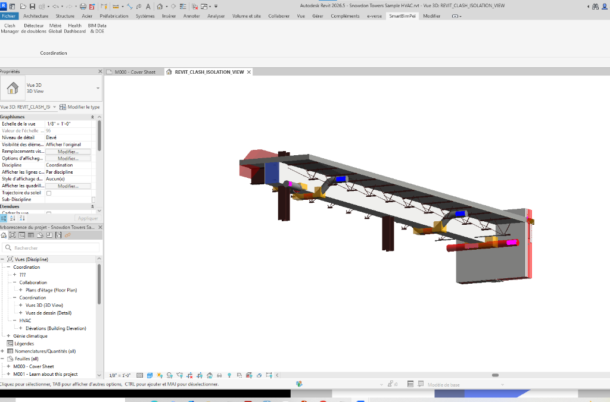

📑 Suite SmartBimPeï — Documentation Technique & Manuel Utilisateur
Suite avancée d'extensions Revit® pour la Pré-Synthèse et le Contrôle Qualité BIM
🌟 Introduction & Valeur Ajoutée
À qui s'adresse cet outil ?
Ce plugin a été pensé par et pour les BIM Managers, les Coordinateurs BIM, les Projeteurs (CVC, Plomberie, Elec, Archi) et les Chefs d'Entreprise.
Quelle est ma mission principale ?
Dans le monde du BIM, la détection des conflits (clashs) et leur résolution (création de réservations, communication) sont des processus chronophages qui coûtent extrêmement cher aux entreprises. SmartBimPeï supprime ces goulots d'étranglement grâce à :
- L'automatisation intelligente : Oubliez la création manuelle de réservations un par un. Mon plugin gère des fusions de réseaux complexes et des murs courbes.
- La communication standardisée : En utilisant les standards OpenBIM (BCF), je facilite la communication avec les équipes externes sur des plateformes comme BIMcollab ou BIM Track.
- La visibilité de gestion : Un tableau de bord décisionnel permet aux chefs d'entreprise d'évaluer la santé du projet en un coup d'œil.
⚙️ Module 1: Smart Clash Detector (Moteur de Synthèse Géométrique)
Ce module est le cœur de SmartBimPeï. Il ne se contente pas de trouver des clashs ; il les comprend pour vous proposer des solutions concrètes.

1.1 Le Panneau de Configuration (À gauche)
Ce panneau vous permet de paramétrer votre recherche de façon chirurgicale.
- Sélection Modèle A & Modèle B :
⚙️ Utilisation : Choisissez les modèles à croiser.
💎 Plus-value : Évite d'analyser toute la maquette inutilement.
- Tolérance (mm) :
⚙️ Utilisation : Définissez la distance de pénétration acceptable.
💎 Plus-value : Évite les "faux positifs".
- Filtres "Taille min." :
⚙️ Utilisation : Saisissez une dimension minimale sous laquelle l'élément est ignoré.
💎 Plus-value : Temps de calcul drastiquement réduit.
- Marge Auto-Réservation :
⚙️ Utilisation : Indique le débord (ex: 50mm) ajouté autour de la gaine.
💎 Plus-value : Anticipe l'isolation.
1.2 Le Tableau de Synthèse (Au centre)
- Le Regroupement Intelligent (Smart Grouping) :
⚙️ Ce que ça fait : Regroupe les clashs proches en un seul ID.
💎 Plus-value : Réduit la fatigue visuelle.
- La Colonne "Dimension Resa" :
⚙️ Ce que ça fait : Affiche en direct les dimensions finales du trou.
💎 Plus-value : Impact architectural visible immédiatement.
1.3 Les Actions de Résolution (En bas)
Bouton 👁️ "Isoler Clash" :
- ⚙️ Utilisation : Ouvre une vue 3D centrée.
- 💎 Plus-value : Charte graphique transparente et grise, compréhension instantanée.

Bouton 🕳️ "Générer Auto-Réservation(s)" :
- ⚙️ Utilisation : En un clic, place des familles de "vides".
- 💎 Plus-value : Gère la Sliver Tolerance. Ce qui prenait 10 minutes prend 1 milliseconde.

1.4 Les Exports & Rapports (La Communication)
Export BCF (BIM Collaboration Format) :
- ⚙️ Utilisation : Génère un fichier .bcfzip (caméras, statuts, commentaires).
- 💎 Plus-value : Fini les échanges d'emails interminables.

Export PDF & CSV :
- ⚙️ Utilisation : Exporte un rapport visuel ou Excel.
- 💎 Plus-value : Parfait pour les réunions de synthèse.

💡 ASTUCE PRO : Visualiser le contexte du bâtiment
Lorsque SmartBimPeï génère une vue d'isolement (REVIT_CLASH_ISOLATION_VIEW), seuls les éléments concernés sont visibles. Pour comprendre exactement où vous vous trouvez dans la maquette, cliquez sur l'icône "Lunettes" en bas de l'écran et sélectionnez "Restaurer le masquage/l'isolement temporaire". Le reste du bâtiment réapparaîtra instantanément autour de votre collision !


📈 Module 2: BIM Health Dashboard (Tableau de Bord de Pilotage)

🎯 Le coup d'œil de la direction : Le Dashboard est la tour de contrôle de votre projet.
- ⚙️ Utilisation : Analyser les indicateurs clés (clashs, doublons, coûts).
- 💎 Plus-value : Outil ultime de valorisation du travail accompli.
🧹 Module 3: Duplicate Detector (Nettoyeur de Maquette)

- ⚙️ Utilisation : Lance une analyse pour trouver les éléments MEP superposés.
- 💎 Plus-value : Empêche des erreurs financières majeures (doubles commandes).
🛡️ Module 4: Audit BIM (Contrôle Qualité & Charte)

- ⚙️ Utilisation : Scanne intelligemment la maquette pour vérifier le DOE et le respect de la Charte BIM.
- 💎 Plus-value : Traduit les données manquantes en impacts réels sur la maintenance.
💰 Module 5: Métré Express (Quantities & Pricing)

- ⚙️ Utilisation : Extrait les quantitatifs géométriques et croise avec votre bibliothèque de prix.
- 💎 Plus-value : Gain de temps colossal pour les économistes.
Ce manuel est conçu pour accompagner la montée en compétence des équipes. SmartBimPeï n'est pas qu'un simple outil, c'est un atout concurrentiel majeur pour vos processus BIM.
Partie 2 : Guide Détaillé de l'Interface
Ce document détaille l'utilisation des différents modules de la suite SmartBimPeï.
1. Détection de Conflits (Clash Detector)
Ce module est le cœur de SmartBimPeï. Il permet d'analyser deux modèles (ou un modèle contre lui-même) pour détecter les intersections physiques (clashs) entre les éléments.
1.1 Configuration de l'analyse
| Élément |
Description et Fonctionnement |
| Modèle A / Modèle B |
Sélectionnez le fichier cible (maquette courante ou lien Revit) pour chaque modèle. C'est entre ces deux modèles que la détection sera lancée. |
| Catégories d'éléments |
Cochez les catégories Revit à analyser pour chaque modèle (ex: Murs, Dalles, Gaines de ventilation, Canalisations). |
| Niveau (Filtre) |
Permet de restreindre l'analyse à un ou plusieurs niveaux spécifiques du bâtiment pour cibler les résultats. |
| Tolérance (mm) |
Marge de chevauchement tolérée. Si deux objets se touchent sur une profondeur inférieure à cette tolérance, le clash est ignoré. |
| Taille min. (Modèle A & B) |
Exclut de l'analyse les éléments trop petits (ex: ignorer les tuyaux d'un diamètre inférieur à 90mm). |
| Marge Auto-Réservation |
Ajoute une marge de sécurité (en mm) autour du clash lors de la création d'une boîte de réservation. |
| Filtre par Paramètre |
Permet de cibler précisément certains éléments (Nom du paramètre exact et Valeur attendue). |
| Filtre d'orientation des réseaux |
(Optionnel) Ciblez uniquement les réseaux Horizontaux ou Verticaux dans la détection. |
| Bouton : Détecter |
Démarre le scan de détection. Les résultats s'afficheront dans la grille à droite. |
1.2 Exports et Mode de Rendu
| Élément |
Description et Fonctionnement |
| Sauver XML / Charger XML |
Permet de sauvegarder l'état actuel de votre détection (avec les conflits résolus/actifs) et de recharger une session précédente. |
| Export BCF / Import BCF |
Format d'échange standard (BIM Collaboration Format) pour envoyer les clashs vers des logiciels tiers de synthèse (Navisworks, BIMcollab, etc.). |
| Mode de Rendu (PDF/BCF) |
Définit comment le logiciel doit interpréter le clash pour la réservation :
- Automatique : Déduit l'action selon la nature de la maquette hôte.
- Forcer Mode Structure : Pour voir/générer les percements (trous réels).
- Forcer Mode Synthèse/MEP : Pour voir/générer les demandes (boîtes oranges).
|
⚠️ Flux de données et Partage (Fichier XML)
À chaque détection, SmartBimPeï sauvegarde vos résultats dans un fichier .xml généré automatiquement dans le même dossier que votre fichier Revit (.rvt).
Pour partager votre analyse avec d'autres intervenants (ex: BET Structure), envoyez-leur toujours la maquette .rvt ET le fichier .xml dans le même dossier. Ils verront ainsi tout l'historique des conflits directement dans leur interface !
2. Module 4 : Audit BIM (Nouvelle version unifiée)
Ce module centralise désormais tout le contrôle qualité de votre maquette. Il fusionne l'ancienne vérification des données avec le système d'Audit pour vous permettre de valider instantanément le respect de votre Charte BIM ou de vos paramètres partagés.
2.1 La fenêtre principale (Lancement de l'Audit)

| Commande |
Description |
| Profil d'audit (Liste déroulante) |
Sélectionnez un profil système préconfiguré ou choisissez un profil personnalisé (Charte BIM) que vous avez créé. |
| Créer / Éditer Règles |
Ouvre l'éditeur de Charte BIM pour modifier le profil sélectionné ou en créer un nouveau. |
| Lancer l'Audit |
Scanne l'ensemble de la maquette Revit selon les règles du profil choisi et affiche la liste des non-conformités (Élément, Sévérité, Description). |
| Auto-Résoudre |
Tente de corriger automatiquement certaines erreurs courantes sélectionnées dans la liste. |
| Exporter CSV |
Exporte les résultats de l'audit vers un fichier Excel (CSV) pour vos rapports. |
2.2 L'Éditeur de Charte BIM (Création des règles)
C'est ici que vous définissez les règles strictes de votre projet.
| Commande |
Description |
| Générer depuis TXT (Paramètres Partagés) |
Fonctionnalité phare. Importez directement le fichier .txt des paramètres partagés fournis par le BIM Manager. Le plugin générera automatiquement toutes les règles pour vérifier que ces paramètres sont bien présents ! |
| Ajouter une règle |
Ajoute une ligne vide pour créer une règle manuelle. Vous pouvez vérifier le nommage (avec masques *), la présence ou la valeur exacte d'un paramètre. |
| Supprimer la sélection |
Efface la règle actuellement sélectionnée dans le tableau. |
| Mode d'emploi (Guide) ? |
Affiche une aide rapide sur l'utilisation des masques de saisie. |
| Sauvegarder la charte |
Enregistre vos règles sous le nom de profil indiqué en haut à gauche. |
3. Détecteur de Doublons
Ce module scanne la maquette pour identifier rapidement les éléments superposés (modélisés deux fois au même endroit).
| Élément |
Description et Fonctionnement |
| Catégories à scanner |
Cochez les catégories d'objets où vous suspectez des doublons (ex: Murs, Appareils sanitaires, etc.). Très utile pour vérifier les imports ou les erreurs de copier-coller. |
| Bouton bleu : Détecter les doublons |
Analyse les catégories sélectionnées et affiche la liste des éléments parfaitement superposés dans le tableau des résultats (avec leur ID et leur localisation). |
| Bouton rouge : Supprimer les copies |
Supprime automatiquement l'un des deux éléments en doublon pour nettoyer votre maquette.
Note importante : Ce bouton ne supprimera que les doublons présents dans votre maquette hôte. Si le doublon provient d'une maquette liée (IFC ou RVT), il sera ignoré car Revit interdit la modification des liens (lecture seule). |
4. Extraction des Quantités (Métré Global)
Ce module génère des quantitatifs précis (longueurs, surfaces, volumes) de votre maquette pour préparer vos devis et chiffrages.
| Élément |
Description et Fonctionnement |
| Filtres (Maquette, Niveau, Catégorie) |
Ces menus déroulants situés en haut s'activent après l'extraction. Ils vous permettent de filtrer rapidement l'affichage du tableau (ex: n'afficher que le Niveau 1). |
| Bouton rouge : Lancer l'Extraction |
Scanne l'intégralité de la maquette (et de ses liens) pour en extraire la liste complète des éléments avec leurs quantités physiques réelles. |
| Boutons bleus : Isoler / Rétablir |
Sélectionnez une ligne dans le tableau et cliquez sur 'Isoler' pour afficher uniquement cet objet en 3D dans Revit. 'Rétablir' annule cet isolement. |
| Bouton vert : Exporter Devis (.xlsx) |
Génère un fichier Excel parfaitement formaté contenant toutes les données de votre tableau, idéal pour un chiffrage. |
| Boutons Importer/Exporter (.sbp) |
Permet de sauvegarder votre tableau actuel (et surtout vos prix unitaires saisis) dans un fichier propriétaire .sbp pour le recharger plus tard. |
| Montant Total Estimé |
Se met à jour dynamiquement en bas à droite en fonction des prix unitaires que vous avez renseignés dans le tableau. |
5. Dashboard (Tableau de bord Global)
Le centre de contrôle qui supervise l'état de santé de vos projets et l'avancement de vos synthèses BIM.
| Élément |
Description et Fonctionnement |
| Graphiques d'avancement |
Affiche visuellement le ratio de clashs "Résolus" vs "Actifs" en lisant les données de votre fichier XML. |
| Indicateur de Santé (Score) |
Note globale attribuée à votre maquette en fonction de la qualité des données (paramètres) et de la présence de doublons. |
| Bouton : Rafraîchir les données |
Force la relecture du fichier XML et de la maquette pour mettre à jour tous vos graphiques en temps réel. |